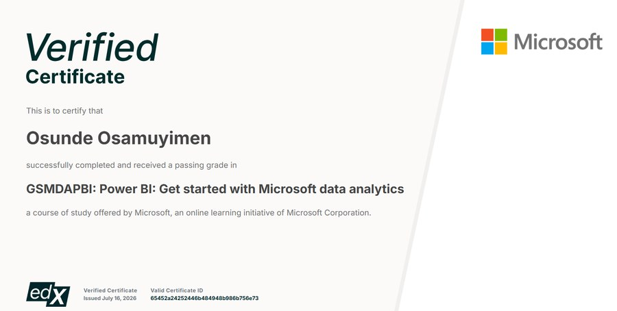
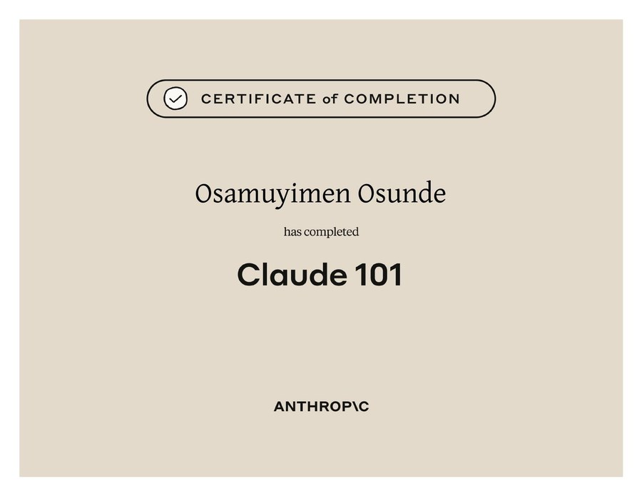

Data Analyst · Wexford, Ireland
Data that tells a story. Insights that inspire action.
I'm Osamuyimen Osunde, an MSc Data Analytics student specialising in predictive analytics, statistical modelling, and business intelligence. With a foundation in front-end engineering, I transform complex data into clear insights and interactive dashboards that support smarter business decisions.
(expected Apr 2027)
University of Benin
Power BI
engineering
Claude 101 (Anthropic)
@gmail.com
About
My path into data analytics started on the front end, building interfaces, wiring up APIs, and watching how the data behind a product shapes the decisions a team makes. That's the lens I still bring to every project: a model or a dashboard is only as good as the decision it helps someone make.
Since starting my MSc at Dublin Business School, I've worked through the full analytics pipeline on real, messy datasets. That means cleaning and encoding the data, comparing classical and ensemble machine learning models, running Bayesian and time-series statistics, then packaging it all into a Power BI dashboard a non-technical stakeholder can open and understand in under a minute.
I pay close attention to the parts that are easy to skip: checking for data leakage, cross-validating instead of trusting a single lucky split, and being upfront in every report about where a model falls short. Data governance and GDPR awareness aren't an afterthought either. They sit right alongside the technical work.
I'm also deliberate about how I use AI tools in that process. Completing Anthropic's Claude 101 training gave me a clearer sense of where an AI assistant genuinely speeds up analysis and where it doesn't, so I use it to check my thinking rather than replace it.
Toolkit
What I work with
The analytical depth to find the answer, and the build skills to actually ship it.
Data & Modelling
BI & Reporting
Practice & Standards
Front-End Engineering
Credentials
Certificates
Training and Certificate

Microsoft, via edX
Power BI: Get Started with Microsoft Data Analytics
Verified certificate covering the fundamentals of Power BI as part of Microsoft's data analytics learning path.
View certificate
Anthropic
Claude 101
Certificate of completion covering practical, effective use of Claude for real analytical and development work.
View certificateExperience
Where I've worked
Junior Front-End Developer
RescueTap · Remote
- Translated business and campaign requirements into technical front-end implementations within an agile workflow
- Integrated interfaces with back-end services and REST APIs
- Used Chrome DevTools and root cause analysis to resolve performance issues
- Built responsive components with React, JavaScript, HTML5 and CSS3, ensuring WCAG and cross-browser compliance
Web Developer Intern
Audu-Nepad · Wuse, FCT Abuja, Nigeria
- Contributed across the full project lifecycle, from requirements through deployment
- Collaborated with designers and QA on iterative releases
- Built device-agnostic, responsive interfaces with modern JS frameworks
Front-End Developer
Aiki Technologies Limited · Lagos, Nigeria
- Delivered front-end implementations from technical specifications
- Proposed and implemented performance enhancements informed by engagement data
- Worked cross-functionally with product, design and back-end engineering
Selected work
Projects
Click into any project below to see the report, the slides, the code, and (where I recorded one) a walkthrough video.
Get in touch
Let's talk about your data.
Open to data analyst roles, freelance analysis and good collaborations. I usually reply within a day.